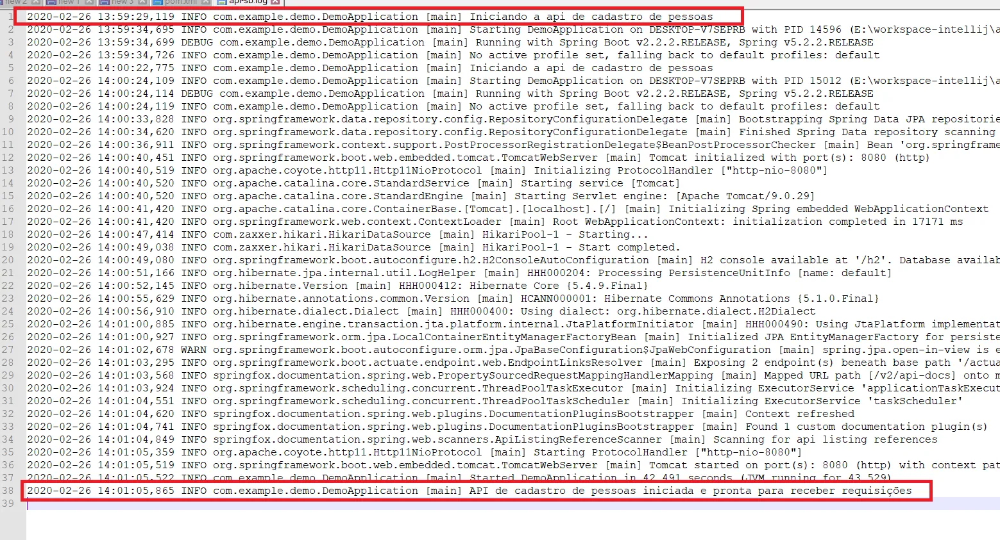

Uma coisa importante sempre que temos programas em produção é a criação de logs para que seja possível verificar o comportamento desse programa. Isso é necessário pelo simples fato de não ser possível disponibilizar o ambiente de produção para que o analista entenda o que está acontecendo ou faça a análise de um problema específico. Esse ambiente está sendo utilizado por pessoas e/ou outras aplicações.
Por isso aquela famosa frase “cadê o log?”.
Mas o que é o log?
“Log de dados é um arquivo de texto gerado por um software para descrever eventos sobre o seu funcionamento, utilização por usuários ou interação com outros sistemas.” Fonte: Google.
Vou configurar a geração de log em uma API feita com spring boot versão 2.2.2. É bem simples, não precisa importar nada via pom.xml. Isso porque o spring boot já possui o slf4j como dependência.
O uso é bem simples, vou começar pela classe que inicia a api, nesse caso é a DemoApplication. Nela vou criar uma instância de logger e adicionar conteúdo ao arquivo de log, segue exemplo:
import javax.jms.JMSException;
import javax.naming.NamingException;
import org.slf4j.Logger;
import org.slf4j.LoggerFactory;
import org.springframework.boot.SpringApplication;
import org.springframework.autoconfigure.SpringBootApplication;
import org.springframework.scheduling.annotation.EnableScheduling;
@EnableScheduling
@SpringBootApplication
public class DemoApplication {
private static Logger logger = LoggerFactory.getLogger(DemoApplication.class);
public static void main(String[] args) {
logger.info("Iniciando a API de cadastro de pessoas");
SpringApplication.run(DemoApplication.class, args);
logger.info("API de cadastro de pessoas iniciada e pronta para receber requisições");
}
}
Essa é a sintaxe para criar o objeto de logger, colocar informações no log e os imports necessários. Daqui pra frente é só fazer de uma maneira semelhante a essa, podendo utilizar também o tipo debug e error que o logger disponibiliza.
Vou colocar mais um exemplo de como tratar e informar no log o conteúdo de uma exceção:
@RequestMapping(path = "/person")
piblic class PersonResource {
private static Logger logger = LoggerFactory.getLogger(PersonResource.class);
private PersonRepository personRepository;
public PersonResource(PersonRepository personRepository) {
this.personRepository = personRepository;
}
{...}
public ResponseEntity<Person> save(@RequestBody Person person) {...}
{...}
public ResponseEntity<List<Person>> getAll() {...}
@ApiOperation("Constulta pessoa pelo id.")
@GetMapping(path = "/{id }")
public ResponseEntity<Optional<Person>> getById(@PathVariable Integer id) {
Optional<Person> person;
try {
person = personRepository.findById(id);
logger.info("Pessoa com id: " + id + " encontrada");
return new ResponseEntity<Optional<Person>>(person, HttpStatus.OK);
} cath(NoSuchElementException) {
logger.info("Pessoa com id: " + id + " não encontrada");
return new ResponseEntity<Optional<Person>>(HttpStatus.NOT_FOUND);
}
}
}
No exemplo acima ocorreria uma exceção do tipo NoSuchElementException caso um id de uma pessoa que não existisse fosse utilizado como parâmetro de busca. Mas o try{} catch{} tratou essa possível exceção e o logger informa em caso de sucesso e em caso de não encontrado.
Beleza, agora que no código já coloquei o que era necessário para colocar informações no log, tem mais um ponto: um arquivo que configura a criação, tamanho, local, rotação etc. Nesse caso usei o logback.xml e aqui está o exemplo:
lockback.xml -> Nome do arquivo
<configuration>
<property name="LOG_DIR" value="logs/api-sb.log"/>
<appender name="FILE-ROLLING" class="ch.qos.logback.core.rolling.RollingFileAppender">
<file>$(LOG_DIR)</file>
<rollingPolicy class="ch.qos.logback.core.rolling.SizeAndTimeBaseRollingPolicy">
<fileNamePattern>logs/archived/api-sb.%d{yyy-MM-dd}.%i.log.gz</fileNamePattern>
<maxFileSize>5MB</maxFileSize>
<totalSizeCap>1GB</totalSizeCap>
<maxHistory>60</maxHistory>
</rollingPolicy>
<encoder>
<pattern>%d %p %c{1.} [%t] %m%n</pattern>
</encoder>
</appender>
<logger name="com.example.demo" level="debug" additivity="false">
<appender-ref ref="FILE-ROLLING"/>
</logger>
<root level="info">
<appender-ref ref="FILE-ROLLING"/>
</root>
</configuration>
Esse arquivo deve ser colocado dentro de “resources”, mesmo local onde está o application.properties. Agora é só iniciar o projeto e verificar que no diretório do projeto foi criada uma pasta “logs” e dentro há um arquivo api-sb.log.
Esse nome pode ser trocado por qualquer outro de sua preferência.
Abrindo o arquivo de log, vou chamar atenção para dois pontos:

Esse é o conteúdo que coloquei na classe DemoApplication.
Legal, né?